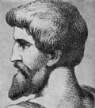

главная  персоналии
персоналии  Спартак
Спартак
главная |

Личность в историикраткая энциклопедияПроект «Личность в истории» посвящен людям — современникам грандиозных исторических событий, носителям редких качеств или людям, взгляды которых опередили их время. |
|||||||||||||||||||||||||||||||||||||||
Коротко |
Статьи |
Персоналии |
Литература |
||||||||||||||||||||||||||||||||||||
Спартак |
|||||||||||||||||||||||||||||||||||||||
|
«…Буду ль я говорить о Спартаке? Огнем и мечом бушевал он вдоль всей Италии, битвой открытой не раз он сходился c консульским войском, у слабых владык отнимая их лагерь. Доблесть свою орлов потерявших в позорных разгромах часто оружьем восставших рабов разбивал он…» Клавдиан |
 Портрет Спартака. Неизвестный художник XIX века. |
||||||||||||||||||||||||||||||||||||||
Биографическая справкаСпартак (ок. 120 г. до н. э. — 71 г. до н. э.), вождь крупнейшего восстания рабов в Древнем Риме. Происходит из племени медов во Фракии. Был на службе у царя Митридата. Попал в плен к римлянам и был продан в гладиаторы. Благодаря высокой доблести добился личной свободы. Будучи непримиримым врагом Рима и искренним борцом за человеческую свободу, в 74 г. до н. э. возглавил восстание рабов, которое в скором времени охватило всю Италию. Спартак был одним из величайших полководцев своего времени. Во главе армии восставших нанес множество поражений римским войскам. Только объединенными усилиями трех своих крупнейших полководцев римляне смогли в 71 г. до н. э. одержать победу над Спартаком. Сам полководец восставших пал в битве, однако страх, который он внушал римлянам при жизни, не исчез и после его смерти. Восстание Спартака эхом прокатилось по всему античному миру. Хронология
Цитаты«Лучше пойти на крайний риск ради свободы, чем рисковать своей жизнью на арене ради потехи зрителей». (Спартак) «…Спартак, фракиец, происходивший из племени медов, — человек, не только отличавшийся выдающейся отвагой и физической силой, но по уму и мягкости характера стоявший выше своего положения и вообще более походивший на эллина, чем можно было ожидать от человека его племени». (Плутарх. Сравнительные жизнеописания. Красс. 8.) «…он устремился на самого Красса; ни вражеское оружие, ни раны не могли его остановить <...> Наконец, <...> окруженный врагами, он пал под их ударами, не отступая ни на шаг и сражаясь до конца». (Плутарх. Сравнительные жизнеописания. Красс. 11.) «…Даже Спартак, разгромивший столько консульских войск и безнаказанно опустошавший Италию, и притом тогда, когда государство было ослаблено непомерно тяжелыми войнами с Серторием и Митридатом, не мог добиться мирных переговоров». (Тацит. Анналы. Книга III. 73.) «В это самое время в Италии среди гладиаторов, которые обучались в Капуе для театральных представлений, был фракиец Спартак. Он раньше воевал с римлянами, попал в плен и был продан в гладиаторы. Спартак уговорил около семидесяти своих товарищей пойти на риск ради свободы, указывая им, что это лучше, чем рисковать своей жизнью в театре. Напав на стражу, они вырвались на свободу и бежали из города. Вооружившись дубинами и кинжалами, отобранными у случайных путников, гладиаторы удалились на гору Везувий. Отсюда, приняв в состав шайки многих беглых рабов и кое-кого из сельских свободных рабочих, Спартак начал делать набеги на ближайшие окрестности. Помощниками у него были гладиаторы Эномай и Крикс. Так как Спартак делился добычей поровну со всеми, то скоро у него собралось множество народа. Сначала против него был послан Вариний Глабр, а затем Публий Валерий. Но так как у них было войско, состоявшее не из граждан, а из всяких случайных людей, набранных наспех и мимоходом, — римляне еще считали это не настоящей войной, а простым разбойничьим набегом, — то римские полководцы при встрече с рабами потерпели поражение. У Вариния даже коня отнял сам Спартак. До такой опасности дошел римский полководец, что чуть не попался в плен к гладиаторам. После этого к Спартаку сбежалось еще больше народа, и войско его достигло уже 70 000. Мятежники ковали оружие и собирали припасы». (Аппиан. Гражданские войны. Книга I. 116.) «Спартак решил пойти на риск, и так как у него уже было достаточно всадников, бросился со всем войском через окопы и бежал по направлению к Брундизию. Красс бросился за ним. Но когда Спартак узнал, что в Брундизии находится и Лукулл, возвратившийся после победы над Митридатом, он понял, что все погибло, и пошел на Красса со всей своей армией. Произошла грандиозная битва, чрезвычайно ожесточенная вследствие отчаяния, охватившего такое большое количество людей. Спартак был ранен в бедро дротиком: опустившись на колено и выставив вперед щит, он отбивался от нападавших, пока не пал вместе с большим числом окружавших его. Остальное войско, находясь в полном беспорядке, было изрублено. Говорят, что число убитых и установить было нельзя. Римлян пало около 1 000 человек. Тело Спартака не было найдено». (Аппиан. Гражданские войны. Книга I. 120.) Список литературы
|
|||||||||||||||||||||||||||||||||||||||
|